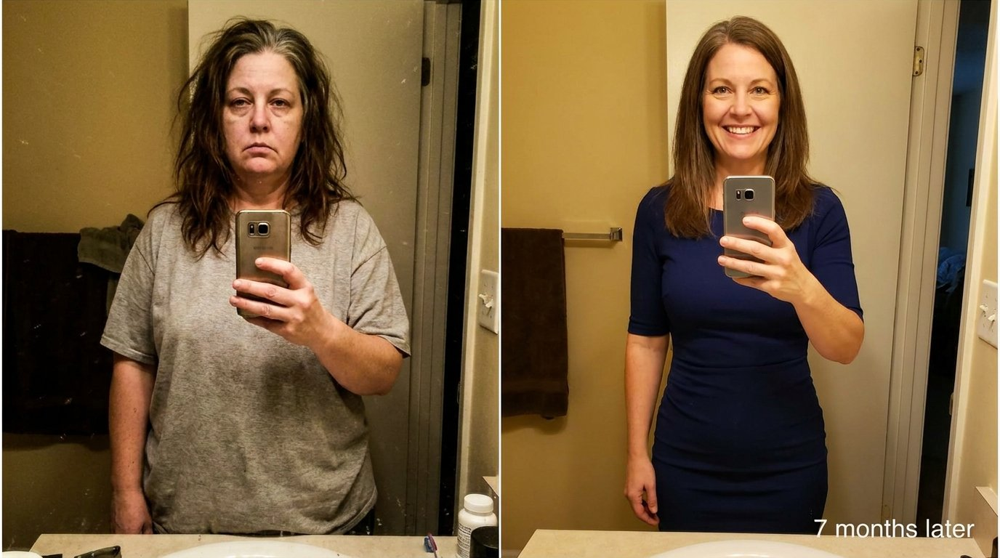
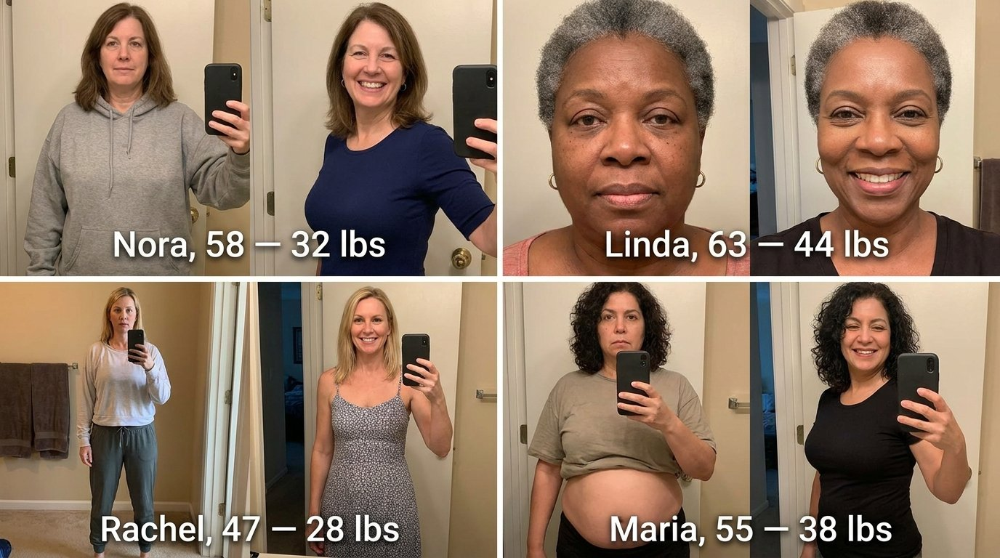

"My Husband Left Me for a Younger Woman. The Gelatin Trick Gave Me the Last Laugh."
How a 52-year-old teacher from Ohio says she lost 61 lbs without injections, gym memberships, or starvation — using a kitchen recipe she says helped boost her GLP-1 levels naturally.

Diane, 52, photographed 7 months apart. She says the turning point was a "gelatin trick" recipe she stumbled on at 2am.
Diane Holloway was 52 years old, a middle school teacher in Columbus, Ohio, when she found the text messages on her husband's phone.
They'd been married for 23 years. Two kids. A mortgage. A life she thought was stable.
The other woman was 31.
"He didn't even try to hide it," Diane told me over the phone, her voice steady now, though she says it wasn't always. "He said he wasn't attracted to me anymore. That I'd let myself go. Those were his exact words."
At 5'4" and 214 pounds, Diane had been struggling with her weight since her second pregnancy. She'd tried Weight Watchers, keto, intermittent fasting, a gym membership she used for exactly two months. Nothing stuck. The scale barely moved. And the more she tried, the worse she felt about herself.
"When he left, something broke inside me. I stopped eating for three days. Then I ate everything in the pantry. Then I cried in the shower for an hour. I was a mess."
But here's the part that stopped me cold:
Seven months later, Diane says she had lost 61 pounds. Her face looked younger. Her skin stayed firm — no sagging. Her physician ran her labs twice because he couldn't believe the improvement.
And she did it without a single injection, without a gym, and without spending more than $2 a day.
This is how.
She Tried Ozempic First. It Almost Destroyed Her.
Two weeks after her husband moved out, Diane's sister convinced her to see a weight loss clinic. The doctor barely looked at her before writing a prescription.
"He spent four minutes with me. Didn't ask about my diet, my sleep, my stress. He just said 'Ozempic' and handed me a pen."
The first month was promising. She lost 14 pounds. The food noise stopped. She felt, for the first time in years, like she wasn't constantly thinking about eating.
Then the side effects started.
"The nausea was so bad I missed three days of work. My hair started falling out in the shower — not a few strands, clumps. And my face... my face looked like it aged ten years in two months. My cheeks sank in. I looked sick, not thin."
"Ozempic Face" — the hollowed, aged look caused by rapid fat loss from GLP-1 injections — has become the most searched health term of 2026.
After four months, her insurance stopped covering it. The out-of-pocket cost: $1,100 a month.
"I couldn't afford it. I'm a teacher. So I stopped."
What happened next is what researchers call the "GLP-1 rebound." Studies suggest that patients who discontinue GLP-1 medications often regain a significant portion of the weight they lost.
Diane gained back 18 of her 14 pounds — more than she had lost — in just eight weeks.
"I was heavier than before, my face looked ten years older, my hair was thinner, and I was alone. That was the lowest point of my life."
What She Found at 2am Changed Everything
It was a Tuesday night in September. Diane couldn't sleep. She was scrolling through Facebook when she saw a video that had been shared 40,000 times.
It was a fitness expert she'd seen on TV dozens of times — someone famous for transforming lives on one of America's biggest weight loss shows. She'd been featured on NBC, CBS, ABC, the Today Show, and Good Morning America.
In the video, she was talking about something called the "gelatin trick" — a combination of specific ingredients that, according to her, could help naturally support the body's production of GLP-1 and GIP, the same hormones that expensive weight loss injections try to replicate synthetically.
"I almost scrolled past it. I thought it was another scam. But this wasn't some random influencer — it was someone I'd watched on national television for years. And unlike everyone else, she was actually showing the recipe and explaining the science. That's what got me."
The video that changed Diane's life — over 1.2 million views and counting.
The video Diane watched that night has gone viral — over 2 million views and counting. It's still available for free below.
▶ Watch the Viral Video — FreeNo signup · No credit card · While it's still free
The expert — whose full identity and step-by-step recipe are revealed inside the video — explained something that made Diane sit up in bed:
"That described my life perfectly," Diane said. "I was doing everything right and still gaining weight. My body was working against me, and now I understood why."
The "Gelatin Trick" — And Why It's Not What You've Seen on TikTok
Let's be clear about something: the "gelatin trick" videos flooding TikTok are incomplete at best. The fitness expert behind this recipe has publicly warned that the viral version — sweet gelatin mixed with random ingredients — misses the key components that actually matter.
The real recipe is fundamentally different. And the reason it may work comes down to two specific mechanisms documented in hundreds of her clients, including professional athletes and A-list celebrities:
First: The amino acids in gelatin — particularly glycine, proline, and hydroxyproline — stimulate the intestinal L-cells that produce GLP-1 and GIP naturally. This is not a drug forcing your body to do something unnatural. It's giving your body the raw materials to restart a process it already knows how to do.
Second: A specific mineral salt combined with two other kitchen ingredients creates what she calls the "activation combo" — together they help the amino acids reach the cells that produce GLP-1 and GIP more efficiently, while also helping reduce cortisol. Cortisol, the stress hormone, is directly linked to belly fat accumulation, especially in women going through perimenopause and menopause.
A: Fat cells before the recipe — large, packed, and stubborn. B: After 30 days — fat cells visibly breaking down as GLP-1 (green markers) reactivates.
"Here's the difference," she explained in the video. "Injections force a synthetic copy of GLP-1 into your body from the outside. This recipe may help your body produce the real thing from the inside. That's why women aren't reporting the same side effects — and that's why many say the weight stays off."
Diane's Results: The Numbers Her Doctor Couldn't Explain
Diane started the recipe on a Monday morning. She expected nothing.
"I figured I'd try it for a week and forget about it. I'd been burned too many times."
By day 4, something shifted. The constant food noise — the obsessive thoughts about eating that had tormented her for years — went quiet.
"It was like someone turned off a radio in my head that had been playing static for 20 years. I wasn't hungry. Not in a sick, nauseous way like Ozempic. I just... wasn't thinking about food."
By week 2, she had lost 9 pounds. By week 6, she had dropped from a size 18 to a size 12. By month 4, she had lost 47 pounds. At month 7: 61 pounds total. Size 8. And her face? No sagging. No hollowed cheeks.
"My doctor ran a full metabolic panel. He said my markers had improved significantly — way beyond what he expected. He asked me three times what I was doing. When I told him 'gelatin and three kitchen ingredients,' he just shook his head and said 'keep doing whatever you're doing.'"
"This is me last month at my favorite restaurant. I ordered the steak AND the wine. No guilt. No shame. Just joy." — Diane, 7 months after starting the recipe.
Want to see the exact recipe Diane used? The full step-by-step video is still online — but it may not be for long.
▶ Watch the Free PresentationFree · No email required
Why Diane Threw Away Her Ozempic Pen
| Weight Loss Injections | Gelatin Trick Recipe | |
|---|---|---|
| Monthly cost | $1,000 – $1,500 | Less than $2/day |
| How it works | Injects synthetic GLP-1 | May support natural GLP-1 + GIP |
| Side effects | Nausea, hair loss, facial changes | No significant side effects reported |
| When you stop | Studies suggest significant weight regain | Many women report maintaining results |
| Skin / Face | Sagging, hollowed cheeks | Naturally rich in collagen |
| Dependency | Ongoing injections | Short-term protocol |
| Accessibility | Prescription only | Kitchen ingredients |
She's Not the Only One
After Diane shared her story in a private Facebook group, dozens of women reached out:
"I couldn't exercise because of a leg injury. I lost 32 pounds in 28 days without leaving my couch. My physical therapist thought I'd had surgery."
"I was on metformin and my A1C was 7.1. Three months later, my A1C dropped to 5.9 and I'd lost 44 pounds. My endocrinologist reduced my medication."
"My husband and I both started the recipe. He lost 22 lbs, I lost 28. We joke that we're the couple who lost weight by eating Jell-O."

*Results may vary. Individual outcomes depend on starting weight, consistency, and overall health. Always consult your physician.
These women all watched the same free video. The recipe and full instructions are inside.
▶ Watch It Now — While It's Still FreeNo credit card · No email required
Why This Recipe Is Going Viral — And Who Wants It Gone
The weight loss medication industry is worth billions. Companies like Novo Nordisk and Eli Lilly generate enormous revenue from monthly injections and the new weight loss pills.
Every woman who finds a natural way to support her GLP-1 levels represents lost revenue for these companies.
Meanwhile, access to affordable alternatives has become increasingly limited. Recent regulatory changes have shut down compounding pharmacies that were providing lower-cost options.
The Recipe Diane Used Is Still Available — For Now
The fitness expert behind this recipe recorded a full presentation walking through the exact recipe, the science behind it, and how to prepare it at home in under two minutes.
It includes the specific type of gelatin to use (not all gelatin works), the exact mineral salt ratio, and the two additional ingredients that complete the activation.
Diane watched this video at 2am on a Tuesday night. Seven months later, she'd lost 61 pounds, fit into a size 8, and — as she puts it — "looked better at 52 than I did at 35."
"My ex saw me at our daughter's graduation last month. He couldn't stop staring. His girlfriend noticed. I've never felt so good in my entire life."
Diane's exact recipe — and the full scientific explanation — are inside this free video.
▶ Watch the Free Video NowNo credit card · No signup · While it's still free
Questions Women Are Asking
Is this the same "gelatin trick" from TikTok?
Not exactly. The expert behind this recipe has warned that the viral TikTok version is missing key ingredients. The real version uses a specific combination of gelatin and three other kitchen ingredients. The full recipe is explained in the video.
Do I need to stop taking my current medications?
Do not stop any medication without consulting your doctor. Many women have added the recipe alongside their current protocol and reported positive results.
How fast might I see results?
Many women report reduced cravings within the first few days. Visible changes typically begin within the first two weeks, though individual results vary.
Will my skin sag?
The gelatin recipe is naturally rich in collagen types I and III — the same types responsible for skin elasticity. Many women report maintaining firm skin throughout their journey.
Who is the expert in the video?
A nationally recognized health and fitness expert who has appeared on NBC, CBS, ABC, the Today Show, and Good Morning America. She's best known for transforming lives on one of America's top-rated fitness shows. Her full identity is revealed inside the presentation.